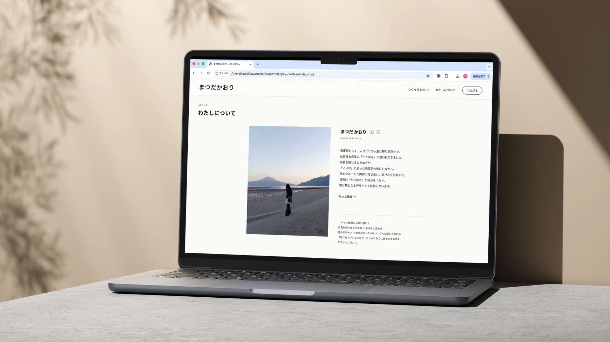
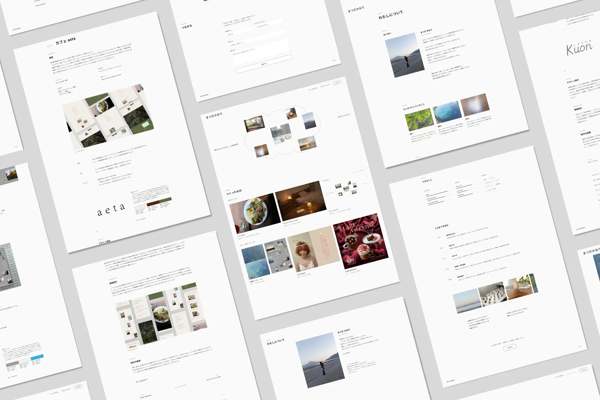
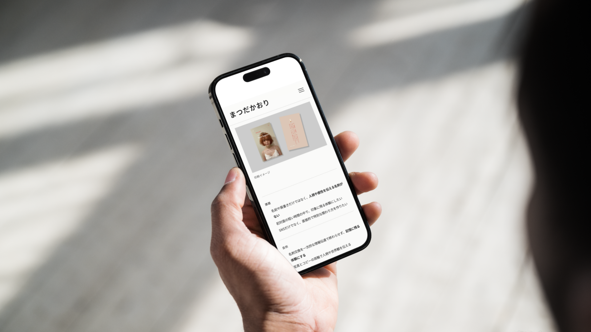

Overview
概要
友人に「（わたしって）雲みたい！」と言われたことから、雲をテーマにポートフォリオを制作しました。
私の人柄や世界観が伝わり、「一緒に働いてみたい」と感じてもらうことを目指しています。制作物を通してスキルを示すだけでなく、「なぜ作ったのか」という背景や思考プロセスも大事にしています。

パソコン版 モックアップ

パソコン版 全体デザイン
- 自身のスキルや制作物だけでなく、人柄や価値観を伝えるポートフォリオがない
- 連絡を取りたいと思ってくれるきっかけや連絡手段がない
- 自身のスキルと制作物に込めた想いを伝える
- 応募書類だけでは伝わりにくい人柄や雰囲気を伝え、「一緒に働いてみたい」と思ってもらう
- ブランドの本質や体験価値を重視する企業の採用担当者の方
- コンセプト設計から伴走できるデザイナーを求めている方
- 制作物だけではなく、思考プロセスを重視する方
Design
デザイン設計
余白を活かしたミニマルな構成とし、視覚的なノイズをそぎ落とすことで、余韻が残る体験を設計しました。トップ画像では、日常を切り取った写真を「小さなときめき」に見立て、雲のモチーフによって、どんな形にもなれるという可能性を表しています。私自身が好きなグリッドデザインを取り入れながらも硬い印象にならないように、全体は雲を想起させる柔らかいトーンで統一し、心地よさが感じられる世界観を構築しました。
INFORMATION
情報設計
トップではコンセプトを感覚的に提示し、制作物→思想→人物像の順に情報を配置しました。採用担当者の方の閲覧効率を考慮し、トップページからすべての制作物にアクセスできる構成としています。制作物ごとに課題・目的・ターゲット・制作意図を整理し、思考プロセスが伝わるように設計しました。制作物のナビゲーションには画像が浮き出るホバーアニメーションを採用し、複数の制作物に興味を持ってもらえるよう工夫しました。スキルはグラフで可視化し直感的な理解を促すとともに、価値観や生い立ち、写真や言葉を通して人柄が伝わるようにしています。

スマホ版 モックアップ